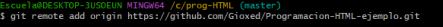

Primero, utilizando git bash abrimos la carpeta en la que vamos a trabajar poniendo las rutas e inicializamos git con el comando git init
Luego con el comando git add + el nombre del archivo especifico, estamos (como dice el nombre) agregando un archivo
Luego para poder guardar el archivo, hacemos un commit con el comando git commit -m "nombre cualquiera"
Bueno, ahora tenemos que vincular el git con nuestro repositorio de git-hub, para eso usamos el comando git remote add origin y el link
El link lo encontramos en la pagina de git-hub en nuestro repositorio en la parte donde dice https, lo copiamos y lo pegamos
Antes no olvidarse de crear nuestro repositorio de git-hub que se crea de la siguiente forma:
Luego para finalizar, nos quedan dos comandos que utilizar en git
El primero es git branch -m main, que lo que hace es traer la rama del git-hub y el otro es git push -u origin main que es el que se utiliza para subir todos los archivos a esta rama
Y con eso finalizamos, gracias ;)